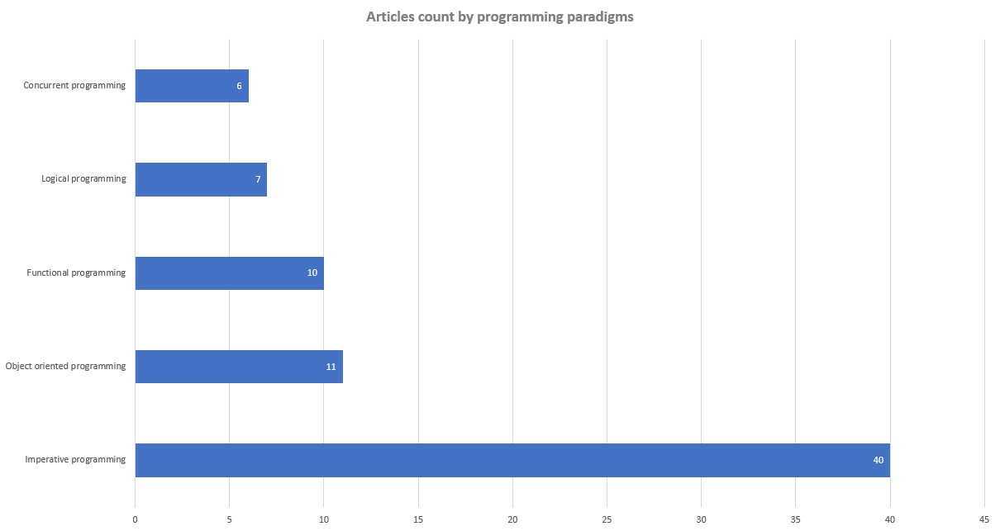
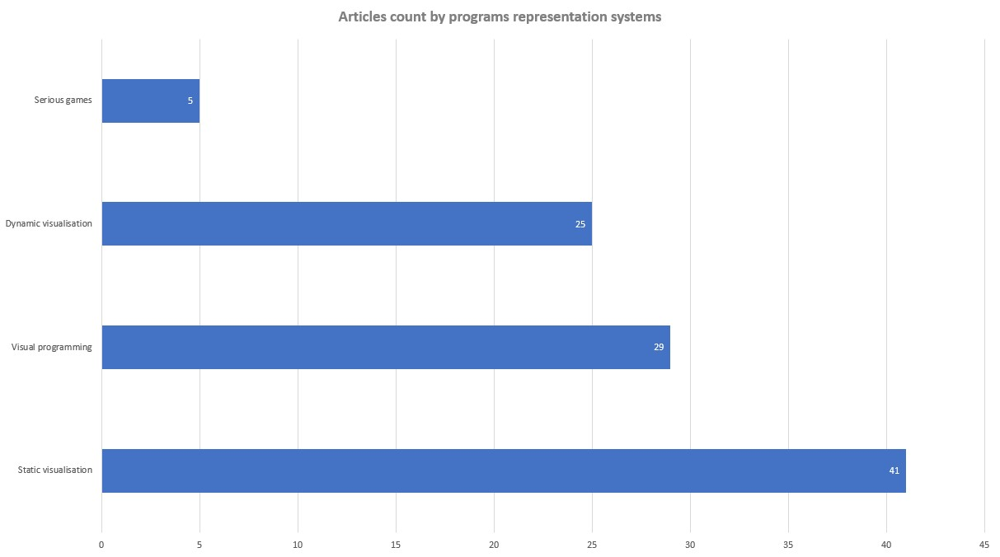

Université de Namur
Initiation à la démarche scientifique | IHDCB339
State of the art: A Systematic literature review on visual representation systems for programming paradigms
Programming paradigms
Imperative
Functional
Logical
Object oriented
Concurrent
Programs representation systems
Visual programming
Static representations
Dynamic representations
Methodology
SLR
Research question
Keywords
Inclusion & Exclusion criteria
Query search engines
Back & forward tracking
Custom bibliography management tool
Results


